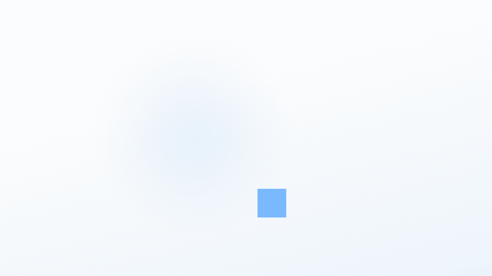
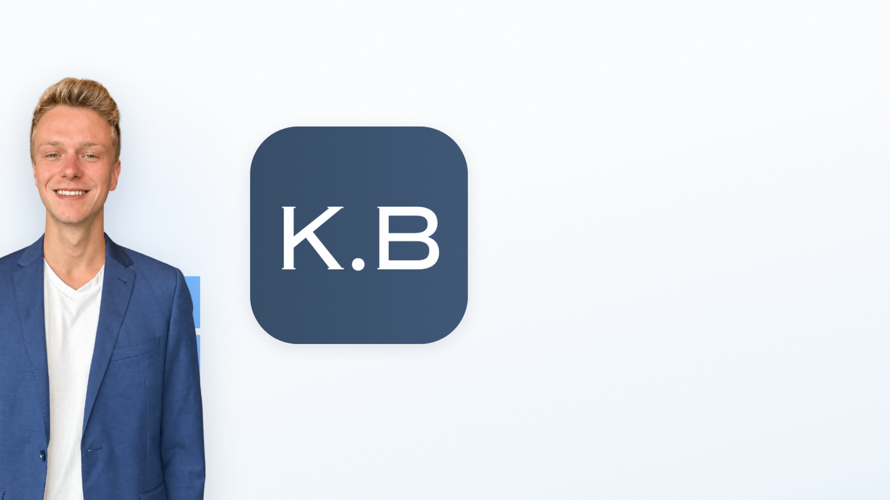
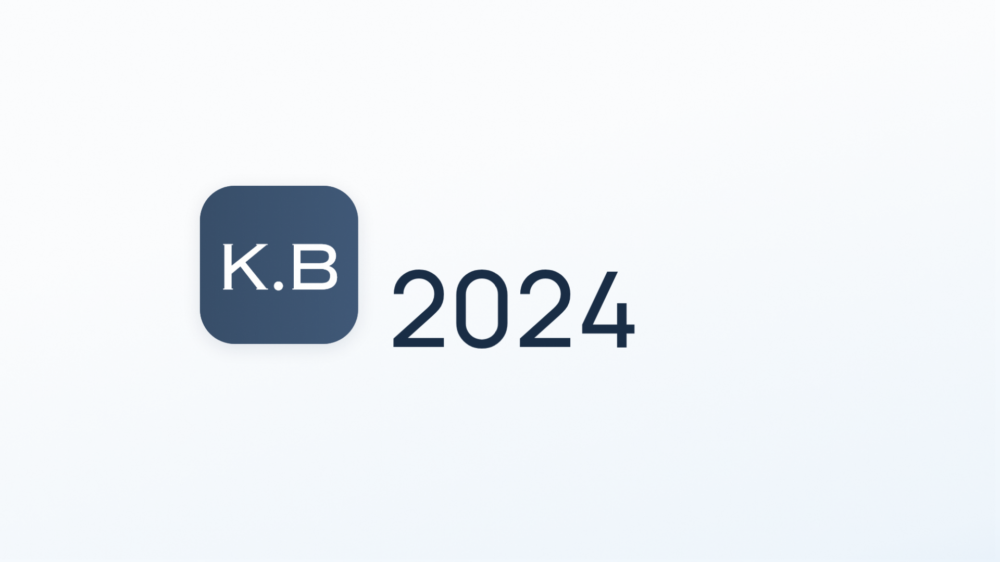
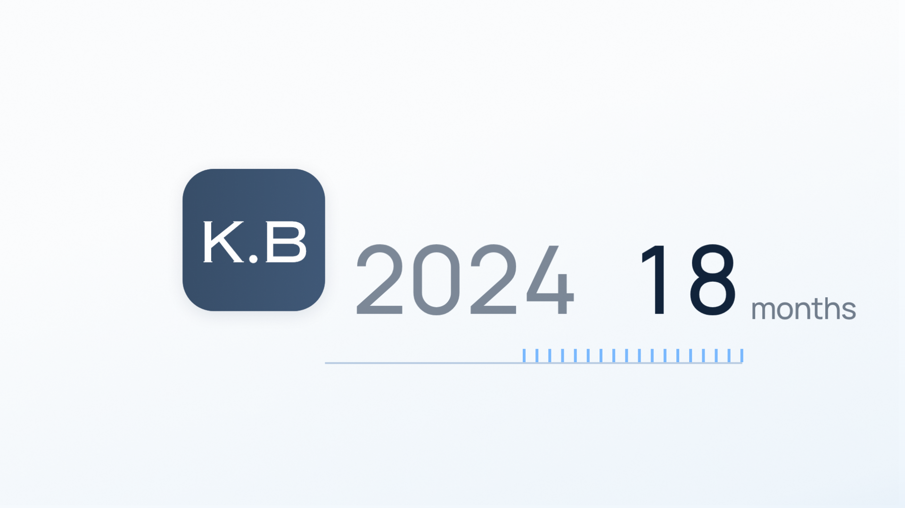
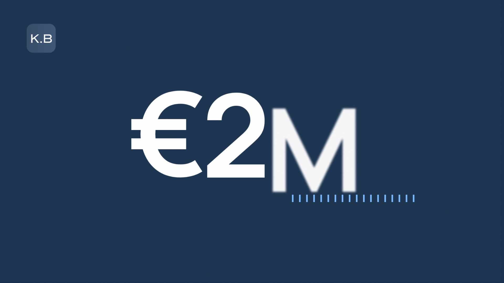
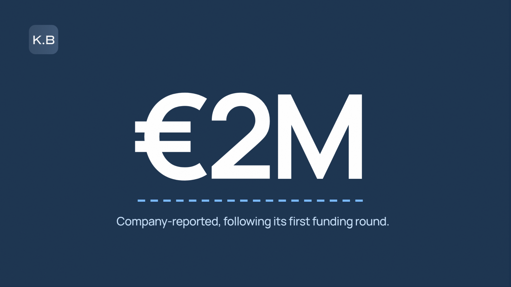
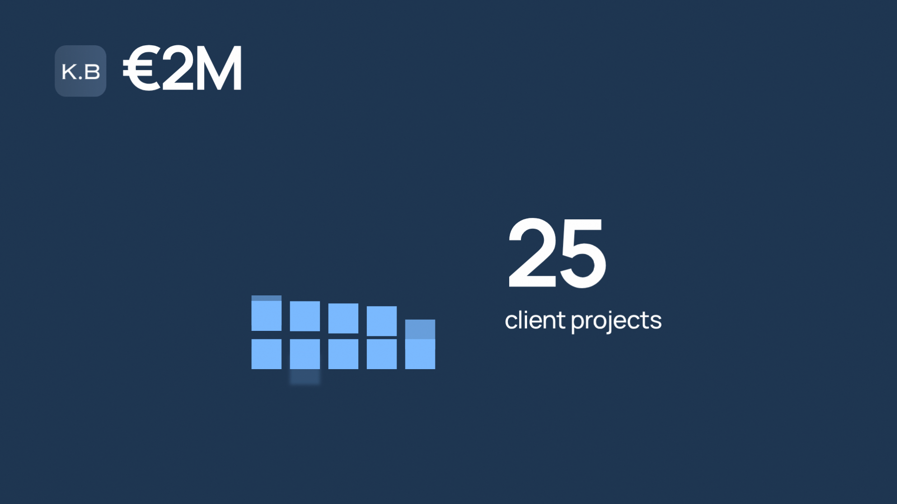
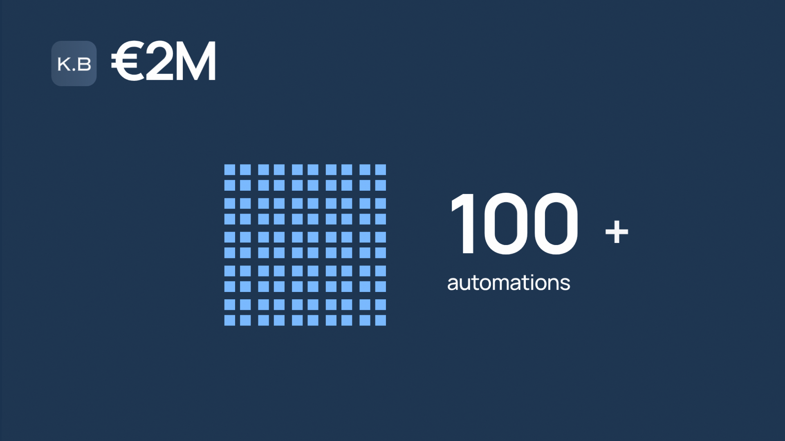
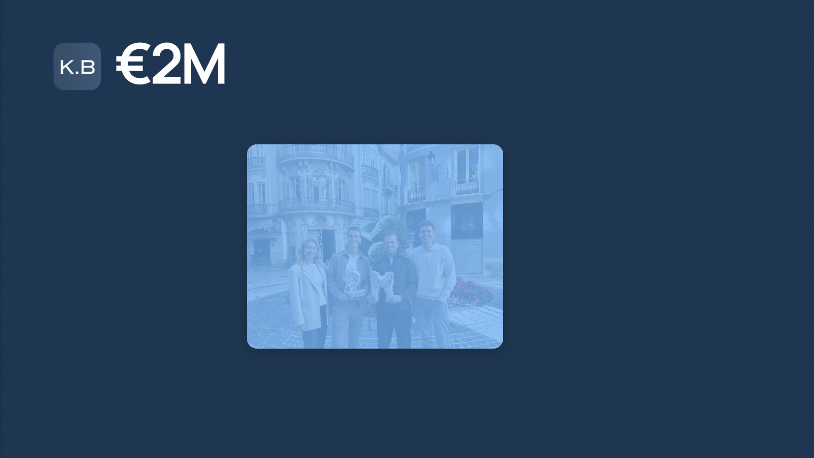
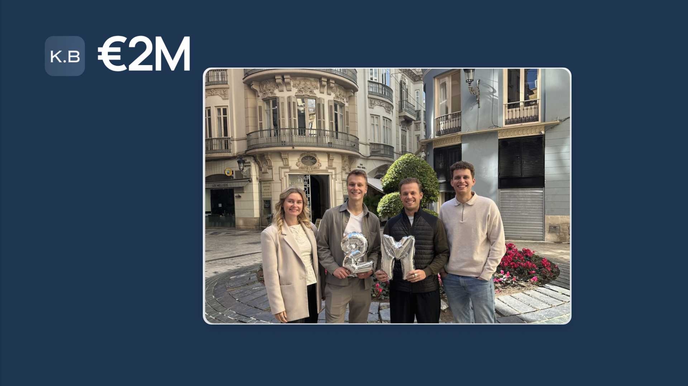

Robin Bos — The structure behind it
30-second business-card film for robin-bos-profile (test.karlvankessel.workers.dev) and LinkedIn · storyboard v1, frames rendered from the Remotion project · 2026-10-05
The film
delivery 1920×1080, 30 fps, 30.00 s, H.264 yuv420p BT.709 TV range, AAC 48 kHz stereoloudness -15.0 LUFS integrated, true peak -1.7 dBFS (target −15 / under −1.5)motion moving in 95% of frames; 0.47 s longest stillshake nonepops 9 flagged, 8 pops and the field reveal at 14.0 s; each opened: a designed arrival, departure, reveal or morph (see the QC report)busy things on screen: median 3 (references 3–7, median 4)phrases 18 of 18 phrases bring a new visual (target: all; 6% of the frame changed or 0.6% new structure); longest voice without a new visual: 0.0 s (target 2.5 s or less)probe (project) summary (calm): clean. camera pan up to 0 px/s, zoom up to 0.0 %/s; separate motions at once: median 1, 95th 3brand 36 of 37 storyboard frames on palette; off: f0615.png (the team photo)tells no tells in 11 files
Project direction
PurposeWho Robin is, what he builds, what he has built; make a founder want to talk to him.
AudienceFounders, owners, investors, partners; sound often off; two seconds to decide.
Format16:9 · 1920×1080 · 30 fps · 30 s (voice 0.3–27.9 s, end card to 30).
Core messageRobin builds the structure behind businesses, and has the proof.
ToneConfident, warm, direct, premium: middle durations, ease-outs, no overshoot, one slow camera breath.
Style and brandRobin's own site, moving: Manrope, ink #0E2038, the sky-blue square #79B9FF as the only accent on white, blue word #5078A0, white→pale-blue haze; one navy field (#1B334F, his contact section) for the valuation and proof.
Art directionOne continuous stage. Mixed media decided once: his studio cut-out, one real photo (the €2M team post), real logos, type, flat shapes. No stock, no icons for nouns, no glow.
Motion personalityPrecise premium. ARRIVE (.22,1,.36,1) for ~80 % of moves; quick 6–8 f, standard 12–16 f, slow 24–36 f; entrances from outside the frame or out of the previous object with motion blur; nothing pops past its size.
Transition family(1) The square leads: the object becomes the next object, masks grow out of objects. (2) Layout transformation. (3) A slide on a rail, twice (Robin's exit left at 10 s; the card's exit left as Robin returns from the right at 20.7 s). No crossfades, no hard cuts.
Voice-over and musicTimed to a scratch synthetic voice (Piper) for the draft; Robin or a VO artist records the approved script and the picture is retimed to the words. Music: a composed calm-optimistic bed (113.5 BPM, D major) with its lift on 'eighteen months later' and its last chord on the end card; 50 soft effects placed on the moves.
Storyboard
A frame per phrase, rendered from the Remotion project itself.
B1 · Hook: the structure 0.0–3.3 s
“A business is only as strong as the structure behind it.”
Wordless: six sky squares (his site's own period) rise from the bottom edge and stack into a wall; on 'behind' Robin rises in front of it. The structure is literally behind him.

0.00 s · frame 0 · (before the voice)
On screen: none · The haze canvas; one square rests at the wall's bottom-right slot; the light disc drifts.
Moves: The camera breath; the light.
Into next: The square: five more stack onto it.
1.20 s · frame 36 · as strong
On screen: none · Robin rising from the bottom edge in front of the first three squares.
Moves: Robin rises 980 px in 19 f, ARRIVE, blurred; the squares keep stacking.
2.20 s · frame 66 · as the structure
On screen: none · Robin in; the last squares stacking behind his shoulder.
Moves: The top course lands; the whole stack settles 6 px.
Into next: The wall: Robin rises in front of it.
3.00 s · frame 90 · behind it
On screen: none · The 2×3 wall complete behind his shoulder.
Moves: The light; the breath.
Into next: Robin: his name lands beside him.
B2 · Name 3.5–4.7 s
“I'm Robin Bos.”
ROBIN / BOS rise word by word at his right; the wall's top-right square slides out from behind his shoulder and shrinks into the period of BOS.: his site's lockup, built from his structure.
3.60 s · frame 108 · I'm
On screen: none · Robin landed in front of the wall, the name about to rise.
Moves: The light brightens behind his face.
4.30 s · frame 129 · Bos
On screen: ROBIN BOS. · BOS on the second line; the square from the wall has landed as its period.
Moves: The square travels ~600 px, shrinking 110→46 px, 12 f on MOVE with blur.
Into next: The name blurs out upward; its period stays and becomes the first period of People.
B3 · People. Process. Technology. 4.8–8.6 s
“I build businesses around people, process and technology.”
On 'build' the wall grows a course behind him (he builds while he says it); then one square at a time leaves the wall to become the period of each word of his site's statement.
5.20 s · frame 156 · I build businesses around
On screen: none · The name gone; the wall one course taller; the period square waiting.
Moves: Two squares rise under the wall and push it up 122 px, 12 f MOVE.
6.30 s · frame 189 · people
On screen: People. · People. with the BOS period as its period.
Moves: The word rises 8 f; the period glides to it 12 f.
6.90 s · frame 207 · process
On screen: People. Process. · A second square has left the wall for the period of Process.
Moves: The square travels from behind his shoulder, 12 f MOVE with blur.
7.80 s · frame 234 · and technology
On screen: People. Process. Technology. · The statement complete, Technology in the site's blue; the wall two squares lighter.
Moves: The third square's travel; the light drifts; the breath peaks.
Into next: The three periods gather into one square.
B4 · K.B Consultancy, 2024 8.6–12.7 s
“I co-founded K.B Consultancy in 2024.”
The three periods gather into one square that turns navy, rounds and takes the real K.B letters; Robin leaves left and the tile slides into the spot he stood in. A rail draws out of the tile and 2024 rolls like an odometer.
9.10 s · frame 273 · I co-founded
On screen: none · The words blurring out; the three periods sliding together.
Moves: Three squares gather 10 f MOVE.
9.60 s · frame 288 · K.B
On screen: K.B (the logo) · The gathered square grown to 460 px, navy, rounded; the K wiping in.
Moves: Colour, radius and size change 8 f; the K wipes 8 f, then .B.

10.40 s · frame 312 · Consultancy
On screen: K.B · Robin sliding out left with the wall remainder; the tile sliding into his place.
Moves: Robin exits 1300 px in 16 f DEPART, blurred; the tile moves 14 f MOVE.
Into next: The tile: a rail draws out of its right edge.

12.10 s · frame 363 · in 2024
On screen: 2024 · The tile stepped aside to 300 px; 2024 at 200 px rolled in digit by digit.
Moves: Each digit rolls 10–14 f on its word.
Into next: The rail extends and lays the months.
B5 · €2M 12.7–16.0 s
“Eighteen months later: a two-million-euro valuation.”
The rail lays 18 ticks as a counter rolls 0→18 months; then the tile grows into the navy field, €2M rolls up, and the 18 ticks slide together into its underline, with the site's own caption.

13.40 s · frame 402 · eighteen months later
On screen: 2024 · 18 months · 18 sky ticks on the rail under the numbers; the counter at 18 months; 2024 dimmed.
Moves: The rail extends 20 f; a tick lands per frame; the digits roll in step.
Into next: The tile grows into the field.

14.40 s · frame 432 · a two million
On screen: €2M · The navy field; €2M at 440 px, the 2 just rolled; the K.B mark top-left; the ticks still on their line.
Moves: The field grows 14 f out of the tile; € slides in, the 2 rolls, M rises; one impact.

15.40 s · frame 462 · euro valuation
On screen: €2M · Company-reported, following its first funding round. · The ticks as the underline of €2M; the caption in two lines.
Moves: 18 ticks travel to the underline 12 f MOVE; the caption rises 8 f.
Into next: €2M shrinks to a header beside the mark.
B6 · Proof 16.1–20.8 s
“Twenty-five client projects. A hundred automations. A team that's all in.”
25 squares rise under the header with the counter rolling in step; each splits into four for 100+; the hundred close into one block that grows into the real team photo (the €2M post).

16.70 s · frame 501 · twenty-five client projects
On screen: €2M · 25 client projects · The 5×5 rising row by row; the counter rolling.
Moves: A square per frame, 12 f ARRIVE each; the odometer in step.

18.50 s · frame 555 · a hundred automations
On screen: €2M · 100+ automations · Every square split into 2×2: a hundred in the same block; the counter and the label rolled together on 'hundred'; the + landing on 'automations'.
Moves: 25 splits in one 8 f gesture; the counter rolls 25→100; the + lands.

19.90 s · frame 597 · a team that's all in
On screen: €2M · The team photo card grown out of the block: the four of them in Málaga with the 2M balloons, Robin second from left.
Moves: The hundred close 8 f; the card grows 14 f ARRIVE; the photo pushes in 6 % over 30 f on 'all'.
Into next: The card's box grows into the canvas; the card leaves left.
B7 · Advice 20.8–25.5 s
“Today I advise founders on strategy, leadership, growth and capital.”
The haze returns out of the card; Robin enters from the right; the four companies he advises line up at the left; then one square steps down the four areas as their period, passed words dimming.

20.50 s · frame 615 · (the card)
On screen: €2M · The team card on the field, the push inside it.
Moves: The push; the breath.
21.00 s · frame 630 · today
On screen: none · The haze canvas has grown out of the card's box; the card leaving left; Robin entering from the right.
Moves: The canvas grows 14 f; the card exits 16 f DEPART; Robin enters 18 f ARRIVE, blurred.
21.90 s · frame 657 · I advise founders
On screen: WKConversions · Top Jobs Abroad · ClearScaler · Tale Forge · Robin at the right; the four real logos in a loose 2×2 gathered at his shoulder line.
Moves: Logos slide in from the left edge 3 f apart, 12 f each.
Into next: The logos sink; a square from his shoulder.
22.60 s · frame 678 · on strategy
On screen: Strategy. · Strategy. in the top-left cell the logos left, the square as its period.
Moves: The square travels from behind his shoulder 14 f MOVE; the word rises 8 f.
23.50 s · frame 705 · leadership
On screen: Strategy Leadership. · The square stepped to Leadership. in the top-right cell; Strategy at 55 %.
Moves: The step 10 f MOVE; the dim 8 f.
24.20 s · frame 726 · growth
On screen: + Growth. · Growth. in the bottom-left cell.
Moves: The step.
25.00 s · frame 750 · and capital
On screen: + Capital. · The four areas in the 2×2 beside him; Capital in blue.
Moves: The step; the breath easing toward rest.
Into next: The words blur out; the square drops to become the first block.
B8 · Let's talk 25.5–30 s
“If you're building something that needs structure, let's talk.”
The viewer's wall: the square drops as the first block, a second rises from below, Robin supplies the other four from behind his shoulder; LET'S TALK. takes its period from the wall, and the period widens into his site's button.
26.00 s · frame 780 · if you're building something
On screen: none · The square, grown to a block, at the bottom between the type column and Robin.
Moves: It drops 14 f MOVE, growing 46→110 px; the second block rises on 'something'.
26.50 s · frame 795 · something
On screen: none · The second block has landed on the first: a thin tower.
Moves: It drops from above 12 f ARRIVE.
27.10 s · frame 813 · that needs structure
On screen: none · Four squares sliding out from behind Robin's shoulder bracing the tower into the 2×3 wall.
Moves: Four travels 12 f MOVE, 3 f apart, blurred; the breath settles to rest.
Into next: The wall's top-left square becomes the period of TALK.
27.80 s · frame 834 · let's talk
On screen: LET'S TALK. · LET'S / TALK. at 190 px with the square as its period; the wall of five beside Robin.
Moves: Two words rise 8 f each; the square travels 12 f. Nothing else moves.
28.60 s · frame 858 · (end card)
On screen: LET'S TALK · Start a conversation ↗ · The period has widened into the ink pill; the contact lines about to rise.
Moves: The morph 14 f ARRIVE: square → pill, sky → ink.
29.50 s · frame 885 · (end card)
On screen: + robin@kruslockbosconsultancy.com · linkedin.com/in/robindanielbos (40 px) · The end card: the invitation, the pressed button, the two lines, the wall, Robin.
Moves: The press (3 f dip, 6 f return) at 29.2; one slow push to the end.
29.97 s · frame 899 · (last frame)
On screen: as above · The last frame, still working: the push completes.
Moves: The camera's push.
Notes
- Script: proposed, written from Robin's own site copy and his €2M post (first-person and third-person variants in storyboard/notes.md). Every claim is in harvest/facts.md. '€2M' carries the site's own caption: company-reported, following its first funding round.
- Format assumption: 16:9 at 1920×1080, 30 fps, 30 s (website hero + LinkedIn). The subject stays in the middle 60 % for a later 9:16 recut.
- Look: no intake style was chosen, so the look is Robin's own brand measured from his site (brand.json); bright by default, one navy field for the valuation and proof (6.7 s), grown out of the K.B tile and leaving through the card's box.
- The 2×3 wall is the film's one grounded metaphor: his own square mark stacking as blocks for 'structure'; it reads in a second and returns at the end as the viewer's structure, completed from Robin's shoulder.
- Robin: on screen 2.6–10.1 s, in the photo 19.4–21.0 s, 21.0–30 s (about 18 s). Two entrances (from below, from the right), one exit (left); never scaled or re-placed while on screen.
- The four companies: as his site presents them (WKConversions, Top Jobs Abroad, ClearScaler mark + name, Tale Forge). hirebetter.io is a K.B venture, not an advisory role, and is left out of the advisory beat.
- 25 projects and 100+ automations are K.B's own figures (kruslockbosconsultancy.com); shown as units, since 14 client logos ≠ 25.
- Voice: Piper en_US-ryan-high scratch voice, timing only. The real recording retimes the picture: every move is keyed on a word label.
Revision log
| Before | After | Why |
|---|---|---|
| B6 "a hundred automations": counter 25→100 on "hundred" over the label "client projects" | label rolls with the counter; only the + lands on "automations" | a false claim for half a second |
| B5 €2M: two-line caption at 36/30 px; the 2 rolled through 1 | one verbatim line at 44 px; the 2 rises with € and M | phone legibility; a false number for six frames |
| B8 end card: 34 px grey contact lines in the bottom margin | 40 px ink/blue lines above y 980; pill 640×112 | the "how" must be readable |
| periods: 46/40 px squares over the last glyph | 34/24 px, 0.2 em clear, bottom on the baseline | the site's proportion, no collisions |
| B4–B5: tile largest; ticks through the digits | tile steps aside to 300 px; 2024/18 at 200 px; ticks 40 px under | the subject the largest thing |
| B7: a column with a stepping period (B3 mirrored); a hairlined logo table | the areas take the logos' 2×2 cells near Robin; no hairlines; bigger logos | one layout family in two beats; a trusted-by table |
| B1: 2.6 s without Robin | Robin rises on "strong"; the last three squares stack behind him | a face in the two-second window |
| B8: the second block beside the first | it lands on top: a thin tower braced into the wall | "needs structure" as a picture |
| transitions: field/canvas reveals from one frame; tile colour switch; the haze rect over the card | ease-in-out reveals; interpolated colour; the rect behind the card from its exact box | cuts and pops in the QC |
| B1 hook: a lone 2×2 beside the cut-out (cold eyes: a Windows logo) | the wall builds as a column and its footing first; squares rise out of a blur inside the frame | a logo read in the two-second window |
| B1 'behind': measured static | the wall tucks 150 px, Robin comes 3 % forward | every phrase gets its visual |
| B4: '2024' and '18' jammed into one number | a clear gap between them | two numbers never read as one |
| B6: the odometer flicked a digit per frame; no label until 'projects'; 99→100 as a pop | slower landings, an eased count that fades in with its label; 25 rolls up and 100 rolls in like the label | a flicker is not a roll; a number needs its label |
| B7: Robin two entered at 150 px a frame; B5: the € popped in | both fade over their first four frames | pops in the QC |
| B8: LET'S with the apostrophe jammed against the T | a typographic apostrophe with hair spaces | the glyph must read |
| slow text stepping whole pixels (SHAKE on Growth) | words on their own layer; the final rendered in contiguous chunks | a tremor in the QC |
| B4: the K.B period appeared in one frame | a soft-edged wipe | nothing appears in one frame |
| B6: the odometer rolled 0→25 at 16 a second (flicker, ghosts, lurch) | 25 rises whole on 'five' with its label; the squares are the count | every number on screen is his figure |
| B1: a 2×3 rectangle (the Windows read) | a stepped stack of five with wider gutters | blocks, not panes |
| B2: the period waited alone after the name left | the name stays until its period leaves | no stray in the thread |
| cut-outs defocused on fast moves; the light's band crept | opacity fades, 16-sample camera blur, a 3 % breath and a static grain | no transition-device blur, no tremor |
| B8: the complete end card held under half a second | button 27.9 s, lines 28.3 s: holds 1.3 s | the contact lines are the conversion |
| B2–B3: the periods left the wall from its pre-tuck position (a 60 px jump) | they leave from where the wall stands now | a square never jumps |
| the light: a 190 px CSS blur whose rings changed between frames | a radial gradient under the grain | deterministic |
| B3: passed statement words stayed at full strength | they dim to 55 % as the next arrives, the areas' rule | one rule film-wide |
Asset requests
- None: every asset comes from Robin's site, the K.B site and his public post (assets/assets.md).
Tool requests
- None needed for the build. For the final: the recorded voice-over (file) and, if Karl has one, a music track.
Open questions
- Script approval (or Robin's edits), and who records it: Robin (first person) or a VO artist (third-person variant).
- Music: keep the composed bed, or is there a track? Effects: 50 soft cues; Karl's ear decides the density.
- The team photo from Robin's €2M post for 'a team that's all in': fine, or Robin alone?
- The navy field for 6.7 s (valuation + proof) vs contracting back to bright after €2M (one judge preferred that).
- End card contact: email + LinkedIn (as on his site), or 'Start a conversation' + the page URL?
- Cold eyes' two-second verdict on the draft-3 frames was 'scroll past'; the hook now opens on Robin rising with a column of his squares. Strong enough, or should his name come inside the first two seconds?
- Cold eyes read 'People. Process. Technology.' as a bullet reveal: keep the site's statement (periods arriving from his wall), or a picture instead?
- Cold eyes read the four client logos in colour as 'logo soup': keep, set in ink, or fewer?
- Scorecard (three fresh lenses + judge, 36/55): the one structural change left is B7 'today I advise founders', rebuilt as one object (the team card onto a rail, logos at one cap height in ink, the areas as captions). A new round, if Karl wants it.
- The end card holds 1.3 s after the voice (scorers asked 2.5 s): cut the viewer's wall build, or accept the hold since the film loops on the site?
Appendix
Beat sheet, arc, art direction
# Beat sheet, arc and art direction (steps 3–5) Times are from the scratch voice (film/src/words.json; the picture is retimed when the real voice arrives). Word labels are `w:<word>` (repeats numbered: `w:as2`, `w:a2`, `w:twenty2`, `w:structure2`, `w:i2`…; `w:kb` = `w:kay`). ## Beats | # | Time | VO | Core meaning | Viewer must understand | Imp. | Tone | Nouns | Verbs | Type | Hold | Sets up / pays off | |---|---|---|---|---|---|---|---|---|---|---|---| | B1 Hook | 0.3–3.6 | A business is only as strong as the structure behind it. | A company stands on what holds it up. | "structure" is the subject; something is being built behind. | 2 | confident, curious | business, structure | hold up, stand, build behind | Hook / Abstract concept | short | sets up "structure" (paid off at B8) and the square as the unit of building | | B2 Name | 3.7–4.8 | I'm Robin Bos. | This is him. | his face and his name | 1 | direct | Robin | — | Emotional statement (direct address) | yes, as a working hold | the square becomes the period of his name (callback at B8) | | B3 What | 5.0–8.8 | I build businesses around people, process and technology. | His method: three things, in that order. | three words, each shown by something real | 1 | confident | people, process, technology | build around | Process / Feature | no | sets up the three periods; "people" pays off in B6 (the team) | | B4 K.B | 9.0–12.9 | I co-founded K.B Consultancy in 2024. | He started a company, recently. | the K.B logo; 2024 | 2 | pride | K.B, 2024 | co-found | Proof / Transition | no | sets up the time jump of B5 | | B5 €2M | 13.3–16.4 | Eighteen months later: a two-million-euro valuation. | It worked fast. | 18 months → €2M, the number the largest thing | 1 | pride, impact | months, valuation | later (time passes) | Number/data | yes | pays off B4; the film's peak; the navy field | | B6 Proof | 16.7–21.0 | Twenty-five client projects. A hundred automations. A team that's all in. | The valuation rests on real work and real people. | 25 real projects, 100 automations, the real team | 1 | pride, warmth | projects, automations, team | deliver, build, commit | Proof / Number | no | pays off "people" (B3); the squares count (B1) | | B7 Advice | 21.3–25.5 | Today I advise founders on strategy, leadership, growth and capital. | Now he does it for others, in four areas. | the real companies he's with; four areas as steps | 2 | confident | founders, strategy, leadership, growth, capital | advise | Feature / Process | no | pays off B3's "process" with the four areas; sets up the CTA | | B8 CTA | 25.8–30 | If you're building something that needs structure, let's talk. | The invitation. | LET'S TALK. and how (email / LinkedIn) | 1 | warm, direct | structure, talk | build, talk | CTA | end card to 30 s | pays off B1 (structure) and B2 (the period): the square becomes the button | ## The whole film - **Spine:** structure. He builds it (B1–B3), he built it himself and it held (B4–B6), he builds it for others (B7), build yours with him (B8). - **Hook:** not a logo: the squares stacking into a structure behind a company as the first line says "structure behind it", then Robin steps out as its builder. - **Energy curve:** B1 medium (building) → B2 beat/hold (the face, the name) → B3 rising (three steps) → B4 medium (the tile, the year) → B5 **hit** (the time jump, the number, the navy field) → B6 fast relay (three proofs, the team) → B7 steady steps (four areas) → B8 calm resolution (the end card). The turn is at B5; the calm is B8. - **Setups and payoffs:** the square (B1) → his period (B2) → three periods (B3) → the K.B tile (B4) → 25 squares (B6) → the LET'S TALK period and button (B8). "Structure" (B1) returns as the last line's condition (B8). "People" (B3) returns as the team (B6) and "founders" (B7). - **CTA as resolution:** the end card grows out of B8's own words; the square that opened the film is pressed as the button. ## Art direction (step 5) - **Thesis and allowed patterns:** storyboard/thesis.md. - **Visual world:** Robin's own site, moving. One continuous stage: a white→pale-blue haze canvas (#FCFDFE → #EFF6FC, the portrait backdrop's #C8E1FA→#BBCEE4 gradient only behind Robin), ink-navy type (#0E2038) in Manrope, the sky-blue square (#79B9FF) as the only accent on white, blue text on white in #5078A0, hairlines #D9E3EE, pills at 999 and cards at 20 px. One navy colour field (#1B334F, his contact section) for the valuation moment, grown out of an object, and one more at the end card? No: the end card stays bright (Karl: bright by default) and takes the navy only as the button. Nothing enters from outside this world: no stock, no icons for nouns, no glass, no glow. - **Mixed media, decided once:** photo cut-out (Robin, the site's studio cut-out) + one real photograph (the team with the 2M balloons, from his post) + real logos (SVG/PNG as the sites present them) + type + flat shapes (the square, hairlines, pills). Photos appear as cut-out or inside a shape the stage already has (a rounded card, a disc), never as a full-frame background. - **Robin on screen, balanced:** present in B1–B3 (he arrives as the builder and stays while his method builds beside him), absent in B4–B5 (his company and its number take the stage; he is in the team photo in B6), back for B7 (the companies arrange around what he's doing) and B8 (the card). Never two consecutive beats where he merely stands in a new spot: when he's on screen, something is happening to or around him; when he leaves, something he made takes his place. - **Motion personality:** precise premium (motion/motion-identity.md). Signature curve ARRIVE `cubic-bezier(.22,1,.36,1)`; depart `cubic-bezier(.55,0,.9,.4)`; move `cubic-bezier(.65,0,.35,1)`. Duration palette: quick 6–8 f, standard 12–16 f, slow 24–36 f; distance scaling per motion/timing.md. Entrance pattern: from outside the frame or out of the previous object, on ARRIVE with motion blur; type rises 32% of its size out of a blur on its spoken word (kinetic `Line`). No overshoot anywhere (clean film), celebration once: the button press at the end. - **Camera:** one slow breath for the whole film (`breathe()`: scale 1.02 ± 1.8% over ~21 s, drift ±20 px), easing to rest before the sign-off, then one slow push to the end. Never a pan or zoom on a transition. - **Transition family (three):** (1) **the square leads** — the sky-blue square travels from its last role to its next and the next scene forms out of it (mask-out-of-an-object, object becomes the next object); (2) **layout transformation** — the things on screen rearrange into the next composition (the structure's blocks become the name's baseline, the squares become the project grid, the logos line up into the advisory row); (3) **a slide on a rail** — a scene leaves along the direction the eye is already moving and the next continues the vector (used twice at most). One hard cut at most, on the fastest frame of a whip (A1), if a transition needs it. - **Secondary motion:** a second layer always working: the haze field's light (a soft bloom drifting behind the subject), a hairline drawing, a counter ticking, the team photo's card settling. Never more than 3 separate motions at once (the probe's BUSY), never more than ~5 things on screen. - **Sound:** calm-premium palette: a soft swish on the bigger moves, a soft tick per counted square, one impact on "two-million", one chime-free success on the button press; music a light optimistic bed composed to the arc (lift at B5, resolve on the end card). - **Readable where it plays:** the line's subject the largest thing on screen; headlines ≥ 72 px, anything to read ≥ 40 px, captions (the valuation note, the email) ≥ 32 px; key text 100 px from top/bottom, 80 px from the sides.
Production plan (phrases, variety, continuity, decisions)
# Production plan: Robin Bos, "The structure behind it" (30 s)
Synthesis of the concept round (storyboard/concepts/: three concepts, three judges). The "builder" concept won
(judges 1 and 2: 43 and 42 of 50) and takes these grafts; the art director's decisions on the judges' open
questions are at the end. Times from the scratch voice (film/src/words.json); every event lands 3–6 frames before
its word.
## Project direction
PURPOSE: a business-card film for Robin's site hero and LinkedIn: who he is, what he builds, what he has built, talk to him.
AUDIENCE: founders, owners, investors, partners; sound often off; two seconds to decide.
FORMAT: 16:9, 1920×1080, 30 fps. DURATION: 30 s (900 f); voice 0.3–27.9 s; end card to 30.
CORE MESSAGE: Robin builds the structure behind businesses, and has the proof.
TONE: confident, warm, direct, premium (timing row "confident and clear": middle durations, ease-outs, no overshoot).
STYLE AND BRAND: Robin's own site (brand.json): Manrope, ink #0E2038, sky square #79B9FF, blue word #5078A0, canvas #FCFDFE→#EFF6FC, hairlines #D9E3EE, pills 999, cards 20; one navy field #1B334F (his contact section).
ART DIRECTION: one continuous stage. Mixed media decided once: his studio cut-out, one real photograph (the €2M team post), real logos, type, flat shapes. Bright; the navy field for 6.7 s at the peak only.
MOTION PERSONALITY: precise premium; ARRIVE/DEPART/MOVE; quick 6–8, standard 12–16, slow 24–36 f; entrances from outside the frame or out of the previous object with motion blur; no overshoot; one celebration (the button press).
CAMERA: one slow breath for the whole film (breathe(): 1.02 ± 1.8 % over ~21 s, drift ± 20 px), at rest from 27.4 s, one slow push to the end. Never a pan or zoom on a transition.
TRANSITION FAMILY: (1) the square leads: object becomes the next object / mask out of an object; (2) layout transformation; (3) a slide on a rail, used twice (Robin's exit left at 10.1 s; the photo card's exit left with Robin's entrance from the right at 20.7 s). No crossfades, no hard cuts.
VOICE-OVER AND MUSIC: timed to the scratch voice (Piper); Karl/Robin to record; music: a composed calm-optimistic bed (113.5 BPM, D major) with its lift on "eighteen months later" and its last chord on the end card.
## The thread
The sky-blue square, his site's period: six squares stack into a wall (B1) → the wall grows a course while he builds (B3) → its squares leave as the period of BOS. and the three periods of People. Process. Technology. → the three periods gather into one square that becomes the K.B tile (B4) → the tile grows into the navy field (B5) → 25 squares rise under €2M, split into 100, gather into the team card (B6) → one square steps down his four areas as their period (B7) → the viewer's wall: two blocks from below, four from behind Robin's shoulder (B8) → the period of LET'S TALK. → the button.
## Stage layout (two stretches with Robin at one size each, never scaled while on screen)
- Stretch one (2.5–10.1 s): Robin centre-left, cut-out at 0.64 (940 px tall), bottom-centre anchor (790, 1080 + 40 crop), head ≈ (790, 300). The wall stands behind his viewer-right shoulder at x 980–1210. Type at x 1260.
- Stretch two (21.0–30 s): Robin right third, cut-out at 0.70 (1030 px tall), anchor (1590, 1080 + 60), his right arm cropped by the frame edge. Type at x 140. The viewer's wall at x 980–1220 between them.
## Phrases (the shot list; one visual event each)
| # | Time | Words | Key | Visual event | On screen | Transition out (object) |
|---|---|---|---|---|---|---|
| 1a | 0.00–0.38 | (before the voice) | — | The haze canvas; one 110 px square rests at the wall's bottom-right slot (1100–1210, 720–830) with the site's soft shadow; the light disc drifts behind the wall's place. | none | the square: the next five stack onto it |
| 1b | 0.30–2.72 | a business is only as strong as the structure | w:structure (lands 2.16) | Five squares rise from the bottom edge into the 2×3 wall, one every 7 f from w:business−4: bottom-left, middle-right, middle-left, top-right, top-left; each a soft tick; the shadow widens as the wall grows. | none | the wall: Robin rises in front of it |
| 2 | 2.72–3.31 | behind | w:behind (lands 2.62) | Robin's cut-out rises from the bottom edge in front of the wall (18 f, ARRIVE, blur), landing at 3.20; the wall's left column disappears behind his shoulder, the right column peeks out: the structure is behind him. | none | Robin: his name lands beside him |
| 3 | 3.31–4.75 | it, I'm Robin Bos | w:bos (lands 3.88) | ROBIN rises out of a blur at (1260, 330), 190 px bold −0.08em; BOS at (1260, 560); the wall's top-right square slides out from behind his shoulder, shrinking 110→46 px, and lands as the period after BOS. | ROBIN BOS. | the name: it blurs out upward; the period stays |
| 4a | 4.75–6.12 | I build businesses around | w:build (lands 4.70) | The name blurs out (8 f); the wall grows a course: two squares rise from the bottom edge behind him and push the wall up 120 px (12 f MOVE): he builds while he says it. | none | the wall: squares leave it as periods |
| 4b | 6.12–6.72 | people | w:people (lands 6.00) | A square leaves the wall from behind his shoulder (12 f, shrinks to 40 px) and lands as the period of People., which rises at (1260, 300), 104 px medium. | People. | the next square |
| 5 | 6.72–7.34 | process | w:process (lands 6.60) | Second square → the period of Process. at y 440. | People. Process. | the next square |
| 6 | 7.34–8.63 | and technology | w:technology (lands 7.47) | Third square → the period of Technology. at y 580 in #5078A0. Working hold: the light drifts, the breath peaks. | People. Process. Technology. | the three periods: they gather |
| 7a | 8.63–9.42 | I co-founded | w:founded (lands 8.83) | The three words blur out leftward (8 f); their three periods slide together into one 90 px square at (1500, 470) (10 f MOVE). | none | the square: it becomes the tile |
| 7b | 9.42–11.03 | K.B Consultancy | w:kay (lands 9.28) | The square turns K.B navy, rounds (radius 22 %) and grows to 460 px (8 f); the real K.B letters wipe in (K on w:kay, .B on w:bee). On w:consultancy (lands 9.95) Robin slides left out of the frame with the wall remainder (16 f DEPART, blur) and the tile slides into the spot he stood in, centre (780, 520). | K.B (the logo) | the tile: the rail draws out of its edge |
| 8 | 11.03–12.69 | in 2024 | w:four (lands 11.83) | A 4 px rail (#BBCEE4) draws rightward from the tile's right edge along y 700 to x 1300 (12 f); above its start, 2024 rolls like an odometer at (1060, 560), 150 px medium #162F4E: 20 on w:twenty, the 2 on w:twenty2, the 4 on w:four. | 2024 | the rail: it extends and lays the months |
| 9 | 12.69–14.01 | eighteen months later | w:eighteen (lands 12.55) | The rail extends to x 1800 (20 f) laying 18 sky ticks (6×28) one per frame with a soft tick each; a counter rolls 0→18 in step above the rail's end at (1480, 560), 150 px, with "months" (52 px muted) beside it; 2024 dims to 60 %. | 2024 · 18 months | the tile: it grows into the field |
| 10a | 14.01–14.76 | a two million | w:two (lands 13.95) | The tile's rounded rect grows to cover the frame in 14 f (navy #1B334F); its K.B letters shrink to a 110 px white mark at (120, 90); the rail, 2024 and the counter are covered; the 18 ticks stay above the field. €2M: the € slides in from the left, the 2 rolls up once, the M rises; 440 px bold white centred (960, 500); one impact. | €2M | the ticks: they become the underline |
| 10b | 14.76–15.92 | euro valuation | w:valuation (lands 14.88) | The 18 ticks slide together under €2M into its underline (12 f MOVE); the site's caption rises under it in two lines: "K.B Consultancy valuation reached within 18 months." (36 px #79B9FF) / "Company-reported, following its first funding round." (30 px #C8E1FA 75 %). | €2M + caption | €2M: it shrinks to a header |
| 11 | 16.11–17.95 | twenty-five client projects | w:twenty3 (lands 15.97) | €2M shrinks to 150 px and moves beside the K.B mark top-left (14 f); the underline and caption blur out. 25 sky squares (64 px, gap 18) rise from the bottom edge into a 5×5 block at (540–940, 400–800), one per frame from 15.97, a tick each, the counter "25" rolling in step at (1080, 440), 200 px white; "client projects" (52 px) rises under it on w:projects. | €2M · 25 client projects | the grid: every square splits |
| 12 | 17.95–19.35 | a hundred automations | w:hundred (lands 17.90) | Every square opens on its centre lines into a 2×2 of 26 px squares in its own footprint (8 f, 1 f stagger per row): 100 in the same block; the counter rolls 25→100; "+" lands on w:automations; the label rolls "client projects" → "automations". | €2M · 100+ automations | the 100 squares: they close into one block |
| 13 | 19.47–20.78 | a team that's all in | w:team (lands 19.40) | The 100 squares close their gaps into one 400 px block (8 f) that grows into a rounded card 1000×700 at (1060, 540) (14 f ARRIVE) revealing the real photo: the four of them in Málaga with the 2M balloons; the counter and label blur out. On w:all (lands 19.90) a 24 px white print-frame grows around the card and the photo pushes in 100→106 % over 30 f inside it. | none (€2M header stays) | the card's frame: it grows into the canvas |
| 14a | 20.78–21.20 | today | w:today (lands 20.65) | The white frame grows outward to fill the screen (14 f): the navy is gone; the photo card slides left out of the frame (16 f DEPART, blur); the haze returns over 20 f. | none | Robin: he enters on the same rail |
| 14b | 21.20–22.18 | I advise founders | w:advise (lands 21.07) / w:founders (lands 21.47) | Robin enters from the right edge (18 f ARRIVE, blur) to the right third, 0.70. On "founders" the four companies arrive from the left edge, 3 f apart, into a 2×2 of cells (440×170, hairline under each): WKConversions, Top Jobs Abroad, ClearScaler (mark + name), Tale Forge; logos ≥ 90 px tall. | the four logos | the logos: they sink as the first area rises |
| 15 | 22.18–23.18 | on strategy | w:strategy (lands 22.22) | The logos sink out of the bottom edge (DEPART, 3 f apart) as a square slides out from behind Robin's shoulder and lands as the period of Strategy., which rises at (140, 300), 96 px medium. | Strategy. | the square: it steps down |
| 16 | 23.18–23.96 | leadership | w:leadership (lands 23.05) | The square steps down (10 f MOVE) to become the period of Leadership. rising at y 440; Strategy. dims to #586B80. | Strategy. Leadership. | the square |
| 17a | 23.96–24.45 | growth | w:growth (lands 23.83) | The square steps to Growth. at y 580; Leadership. dims. | + Growth. | the square |
| 17b | 24.45–25.52 | and capital | w:capital (lands 24.53) | The square steps to Capital. at y 720, in #5078A0; Growth. dims. The four areas stand in a column beside him. | + Capital. | the words: they blur out; the square drops |
| 18a | 25.52–26.57 | if you're building something | w:building (lands 25.65) / w:something (lands 26.03) | The four words blur out (6 f). On "building" the square drops to (1100, 975) growing to 110 px: the viewer's first block; on "something" a second rises from the bottom edge onto it. | none | the blocks: Robin completes them |
| 18b | 26.57–27.33 | that needs structure | w:structure2 (lands 26.82) | Four squares slide out from behind Robin's shoulder (12 f, 3 f apart, blur) and complete the 2×3 wall at (980–1220, 610–960): he supplies the structure. The breath settles to rest. | none | the wall's top square: it becomes the period |
| 18c | 27.33–28.17 | let's talk | w:lets (lands 27.20) / w:talk (lands 27.43) | LET'S rises at (140, 300), 190 px bold; TALK at y 530; the wall's top-left square slides to the period after TALK (46 px). Nothing else moves. | LET'S TALK. | the period: it widens into the button |
| 19 | 28.17–30.00 | (end card) | — | At 28.2 the period drops 160 px and widens into the ink pill "Start a conversation ↗" (520×96, white label 36 px) (14 f ARRIVE); at 28.7 two lines rise under it: robin@kruslockbosconsultancy.com and linkedin.com/in/robindanielbos (34 px #586B80); at 29.2 the press: the pill dips to 0.97 for 3 f and returns in 6 f, one soft success; no cursor. One slow push 1.00→1.03 from 28.2 to 30. | LET'S TALK. · the button · the two lines | end |
Robin on screen: 2.6–10.1 s (stretch one), in the photo 19.4–21.0, 21.0–30 (stretch two): about 18 s, two entrances (from below; from the right), one exit (left), one photo, never scaled or re-placed while on screen.
## Variety check
| Beat | Strategy | Structure | Centred | Primary (kind, size) | Count | Cards | Distance | Density | Exit |
|---|---|---|---|---|---|---|---|---|---|
| B1 | object transformation (quantity made physical) | wall low-right of centre, empty elsewhere | no | the wall (350 px) | 1 | no | wide | empty | Robin rises in front |
| B2 | typography + person | figure left, name right | no | Robin (940 px) | 3 | no | medium | medium | blur-out up |
| B3 | kinetic type + the thread | figure left, stack right | no | the statement (104 px ×3) | 3 | no | medium | medium | gather |
| B4 | logo + counter | tile left-centre, year right | no | the tile (460 px) | 3 | the tile | close | medium | mask (field) |
| B5 | number filling the frame | centred on the field | yes | €2M (440 px) | 3 | no | close | one thing | shrink to header |
| B6 | quantity made physical → photo | grid left, counter right; then one card | no / yes (card) | the grid, then the photo (1000 px) | 4 → 2 | the photo card | medium | dense → one thing | frame grows |
| B7 | real logos → list with a stepping mark | figure right, logos/list left | no | logos (≥90 px), then the area words (96 px) | 5 → 5 | no | medium | medium | blur-out |
| B8 | callback + CTA | figure right, type left, wall between | no | LET'S TALK. (190 px) | 5 | the button | medium-calm | calm | none |
## Continuity (hand-offs)
1→2 the wall stays; Robin rises in front. 2→3 Robin stays; the wall's square becomes the period. 3→4 the period stays; the wall grows. 4→7 squares leave the wall one by one. 7→8 the periods gather into the tile; Robin leaves left, the tile takes his place. 8→9 the rail extends. 9→10 the tile grows into the field; the ticks become the underline. 10→11 €2M shrinks to a header; squares rise. 11→12 the squares split. 12→13 the squares close into the card. 13→14 the card's frame grows into the canvas; the card leaves left; Robin enters right. 14→15 the logos sink; the square from his shoulder. 15→18 the square steps and drops; the blocks rise; his squares complete the wall. 18→19 the wall's square becomes the period and the button.
## Decisions on the judges' open questions
1. Robin's distance: one size per stretch, no scaling while on screen. Stretch two is a little closer (0.70) because he re-enters; the film's three distances come from the objects (the tile alone, €2M on the field, the photo card).
2. The hook: wordless. The structure builds first, Robin rises in front of it on "behind", his name explains at 3.9 s. A sound-off viewer sees a structure being built and a man stepping in front of it in the first three seconds. (The alternative, "A BUSINESS." on a plinth, puts the voice on screen before any picture.)
3. The end card: the button press without a cursor (the K.B v3 approved sign-off); the thesis line about a cursor is withdrawn.
4. B7: the four areas as a vertical list the square steps down (one travelling period, passed words dimming), not a horizontal rail (collides with Robin at readable sizes) and not a dial pill.
5. Rejected from every concept: the "business" square held at hand height, the stroke-drawn plan, the flips, the dial pill with filler years, the 7-drum odometer, the slab push, small logos held under changing words, a third identical rise of the same wall.
## Art-director pass, round 1 (five independent reviews, then judgement): revision log
| Scene | Before | After | Why |
|---|---|---|---|
| B6 "a hundred automations" | the counter rolled 25→100 on "hundred" while the label still read "client projects" for ~15 frames | the label rolls "client projects" → "automations" in the same gesture as the counter, on "hundred"; only the "+" lands on "automations" | a false claim on screen for half a second (critical, all four lenses) |
| B5 €2M | a two-line caption at 36/30 px (7/6 px on a phone) | one line, the site's wording verbatim, 44 px in the sky tint | the only qualifier of the €2M claim must survive the phone (legibility) |
| B8 end card | contact lines at 34 px grey, the second inside the bottom safe margin; pill 520×96 with a 36 px label | lines at 40 px, email in ink, LinkedIn in the site's blue, last baseline above y 980; pill 640×112, 44 px label; LET'S TALK. moved up 20 px | the "how" of the invitation is what the viewer must take away (legibility) |
| B2, B3, B7, B8 periods | 46/40 px squares overlapping the last glyph by 6–30 px, hanging below the baseline | 34 px (display) and 24 px (statements/areas), 0.2 em clear of the last glyph, bottom on the baseline, measured from the rendered width | the site's proportion; at 390 px the overlap read as a blob (brand, legibility) |
| B4–B5 "in 2024", "eighteen months later" | the tile at 460 px the largest thing; 2024 and 18 at 150 px; the ticks and rail running through the digits' feet | on "in" the tile steps aside and shrinks to 300 px; 2024 and 18 at 200 px, "months" at 64 px ink; the rail at y 780 with the ticks 40 px under the baseline; the rail only draws on "eighteen" (B4 = tile + year, two things) | the line's subject the largest thing; nothing colliding (legibility, brand, story) |
| B7 "on strategy … and capital" | a vertical column of four words with a stepping period: the same structure as B3 mirrored | the four areas take the 2×2 cells the logos just left, near Robin; the square steps through the cells as each word's period, passed words at 55 % | two beats, one layout family (brand, story); the areas inherit the proof's grid instead of restating B3 |
| B7 "I advise founders" | four logos in a hairlined 2×2 table 400 px from Robin, Tale Forge at 87 px | no hairlines; the 2×2 gathered at his shoulder line (x 300–1220); Tale Forge at 206 px tall, ClearScaler's name at 56 px | a "trusted by" table that could sit in any SaaS video (story); two logos unreadable on a phone (legibility) |
| B1 hook | 2.6 s of squares alone; Robin rose on "behind" | the first three squares stack, Robin rises on "strong" (in by 1.3 s), the last three stack behind his shoulder; the whole stack settles 6 px as the top course lands | a face in the sound-off viewer's two-second window; "behind it" still true on the word (story, judge 1) |
| B8 "if you're building something" | the second block landed beside the first: a stable pair | it lands on top: a thin 1×2 tower; Robin's four squares brace it into the wall on "structure" | "needs structure" shown by the picture (story) |
| B3 → B4 "co-founded" | the three periods gathered across the live type while it blurred | the words slide right and blur out first; the periods gather 4 frames later | a square crossing live type (legibility) |
| B4–B6 shadows | tile and card shadows at 3–4× the site's alpha | the site's card shadow on the tile; a soft 0.2 shadow on the photo card | the site's own depth (brand) |
| whole film | the haze a step bluer than the page it will embed in | the canvas white for its upper 40 %, the haze confined to the lower right and behind Robin | matches the hero's 58/24 white/haze share (brand) |
| B5–B6 header | the K.B mark 29 px inside the top safe margin | moved to y 100 | safe area (legibility) |
| B5 €2M | the 2 rolled 0→1→2 as an odometer: "€1M" on screen for ~6 frames | the 2 rises out of a blur with the € and the M | a false number, even for six frames (own QC) |
| B1–B5 the light | the soft disc followed the tile after Robin left; not in the thesis | behind Robin only; named in the thesis | a glow the thesis never asked for (truth) |
| B6 counter | integer count: whole-digit jumps as squares landed | a continuous count, the odometer digits rolling | a pop per landing (own QC) |
| transitions | the field and the returning canvas grew on ARRIVE from one frame, the tile's colour switched at once, the haze rect appeared 24 px larger than the card and above it | both grow on an ease-in-out over 0.6 s; the tile's colour interpolates; the haze rect starts at the card's exact box, behind the card, and stays as the canvas | read as cuts and pops in handoff_check (own QC) |
Decisions kept against findings (for Karl):
- B3 as the site's own stacked statement (People. Process. Technology.) with the periods leaving his wall: the story lens wanted a face disc, a 01-02-03 process and tool logos; three pictures in 3.7 s is the busy K.B v3 problem, the judge panel rejected that runner-up, and the statement is his brand's own form (thesis).
- The 2×3 wall as a grid, not a running bond: a 2-wide bond needs half-squares that are not his mark; the vertical stack reads as building up, and the settle on the top course keeps it from reading as a logo.
- The logos in their own colours (Tale Forge gold, ClearScaler mark): asset-strategy rule, third-party logos appear as the client's site presents them.
- The navy field flat, not the contact section's gradient: a large gradient under the breathing camera bands.
- The navy held for 6.7 s through the proof (one judge preferred contracting it after €2M): open question for Karl.
## Art-director pass, round 2 (cold eyes on the draft-3 frames, and the draft-4 measurements): revision log
Cold eyes (one reader, the 34 frames, no plan): two-second verdict "scroll past"; strongest frame the team photo (f0597), weakest the grid mid-build (f0501); eight notes. The measurements of draft 4: moving 93 %, longest still 0.43 s, median 3 things on screen, 17 of 18 phrases with a new visual ("behind" static), one LURCH (the counter), one SHAKE (Growth), 23 pops.
| Scene | Before | After | Why |
|---|---|---|---|
| B1 hook (f0036) | the first four squares stood as a lone 2×2 beside the cut-out | the rise order builds column one and its footing first (three in a column, then an L); the 2×2 never stands alone; the squares rise out of a blur 400 px below, fading in, instead of entering at the frame's bottom edge | cold eyes read a Windows logo and a Canva cut-out in the two-second window (critical); the edge entries were pops (QC) |
| B1 "behind" | the wall tucked 90 px: measured static (4 % of the frame) | the wall tucks 150 px and Robin comes 3 % forward from his feet | "behind it" needs a depth move that reads; every phrase gets its visual (phrase check) |
| B4 "2024" + "18" (f0402) | the two numbers jammed into "202418" | the months 95 px further right: a clear gap, half a digit wide | two numbers must never read as one (cold eyes, major) |
| B5 "€" | the € arrived at a quarter opacity on its first frame (pop 4.3×) | it fades in over 4 frames as it slides | a pop (QC) |
| B6 the count (f0501) | 25 squares landing one frame apart made the odometer flick one digit per frame (pop 15×, LURCH 1607 px/s); no label until "projects"; a square mid-rise 150 px under the grid | the squares land 0.05 s apart, rising 300 px out of a blur and fading in; the count eases in from zero slope and reaches 25 with the last square; the counter fades in over 0.25 s; the label arrives with the count, on "five" | a roll at one digit per frame is a flicker; a number without its label is a mid-tween (cold eyes, major) |
| B6 "a hundred" | the odometer rolled 75 digits in 8 frames: "99" → "100" as a pop (12.8×) | 25 rolls up and 100 rolls in, the same roll as the label beneath it; the "+" moves with the number's width | one gesture, no flicker (QC) |
| B7 Robin two | entered from the right at 150 px per frame (pop 10×) | fades in over his first four frames; the final's motion blur carries the rest | a pop (QC) |
| B8 LET'S (f0858) | the straight apostrophe jammed against the T at −0.08 em tracking | a typographic apostrophe with a hair space either side | the apostrophe must read as its own glyph (cold eyes, minor) |
| all Lines | slow text rises stepped whole pixels: SHAKE on "Growth" (2.7 px steps), a "look" on ROBIN BOS | the words on their own compositor layer; the final rendered in four contiguous chunks so each layer's raster history is continuous | regular steps read as a tremor (QC) |
Decisions kept against the cold-eyes notes (for Karl, see notes.md):
- B3 People. Process. Technology. as the site's own stacked statement (cold eyes: "a bullet reveal, PowerPoint"): kept from round 1; the periods arriving from his wall is the move that a bullet list never has. Karl decides whether a picture replaces it.
- The four logos in their own colours at his shoulder (cold eyes: "logo soup"): asset-strategy rule, third-party logos as their sites present them; four is the count the facts allow. Karl decides between colour, mono and fewer.
- The four areas in the proof's 2×2 cells (cold eyes: "the word-list device again"): round 1 already moved them out of B3's column into the grid; the stepping period is the thread. Kept.
- The K.B tile (cold eyes: "an app icon"): it is his mark as the site renders it (rounded tile, the wordmark). Kept.
- The viewer's wall at the end (cold eyes: "a Tetris stack"): the concept's payoff, the thin tower braced into a wall whose top-left square is the period of TALK. Kept.
- The 5×5 wall of 25 and the 100 small squares (busy peak at 19 s, 35 motions): the proof's one swarm, decided in round 1.
## Final QC and the scorecard, round 3: revision log
The first final encode (8-sample blur) measured: moving 95 %, longest still 0.47 s, median 3 things, 17 of 18 phrases ("process" static by 1 %), −15.1 LUFS, true peak −1.7 dBFS, 20 pops, one SHAKE (the light's banding creeping as it breathed), one LURCH (the count's tens digit). Three fresh scorers (story with the sound off, craft, brand and truth) and a judge scored the storyboard frames 36 of 55 (every lens 3–4; strongest B5, weakest B7). The small changes below went in before the second final; the structural one is an open question for Karl.
| Scene | Before | After | Why |
|---|---|---|---|
| B4 K.B | the wordmark wiped in with a hard edge: the period of "K." appeared in one frame (pop 91×) | a soft-edged wipe (a 12 % feather) | nothing appears in one frame |
| B5 "€" | slid 220 px in 0.4 s: the blur's 8 samples showed as copies | slides 110 px; the final uses 16 samples | a fast move carries blur, not ghosts |
| B6 the count | the odometer rolled 0 → 25 at 16 a second: a flicker with ghost glyphs (pops 16×, LURCH on the tens digit, BUSY 7 motions) | "25" rises whole on "five" with its label; the squares are the count; 25 → 100 as one roll | every number on screen is his figure; the scorers asked for exactly this |
| B1 the wall | a 2×3 rectangle with 8 px gutters (f0066): "the Windows logo" to cold eyes and two scorers | a stepped stack of five, 14 px gutters, never a rectangle; the course makes it seven | blocks, not panes |
| B2 the name | ROBIN BOS left on "build", its period waited alone 0.6 s (f0156, "orphan") | the name stays until its period leaves on "businesses" | the thread never shows a stray |
| B1, B4, B7 cut-outs | Gaussian blur on Robin's rise, exit and entry | opacity fades only; the camera's motion blur carries the fast frames | a cut-out defocused reads as a transition device (scorers) |
| B7 the logos | entered from 700 px: blur copies on Tale Forge and ClearScaler | from 260 px, with the fade | dense blur |
| B3 "process" | the period left the wall 0.45 s before the word: the phrase measured static | it leaves 0.2 s before and lands inside the word | every phrase gets its visual |
| the light | breathed 8 % in brightness: its banded edge crept in 9 px steps (SHAKE 23.4–24.4 s) | 3 % breath and a static 3.5 % grain over the stage | a band that creeps reads as a tremor; grain breaks banding in 8-bit video |
| B8 end card | the button at 28.2 s, the contact lines at 28.7 s: the complete card held under half a second | the button at 27.9 s, the lines at 28.3 s, the press at 29.1 s: the complete card holds 1.3 s (the voice ends at 27.9) | the contact lines are the conversion (scorers) |
| sound | 50 cues: a tick on every landing | 45: no tick for the removed square, two on the grid, two on the end wall | the brief's tone is calm (scorers: density) |
| B2–B3 the periods | the three squares left the wall from the pre-tuck position: a 60 px jump on their first frame (pops 11–13× at 3.6, 6.5 and 7.1 s on the second final) | they leave from where the wall stands now (the tuck and the settle included) | a square never jumps |
| B4 K.B | the feathered wipe still showed the period inside one frame (pop 105×) | 0.4 s with a 30 % feather | nothing appears in one frame |
| the light | a CSS blur of 190 px on an 860 px disc: Chromium rendered its rings differently in the first frames (pop at 0.27 s across the frame) | a radial gradient under the grain | deterministic from frame to frame |
| B3 statement | "process" measured static by 0.6 % | the statement words rise 0.6 em instead of 0.32; a passed word dims to 55 % as the next arrives (the areas' rule, now one rule) | every phrase gets its visual; one rule for passed words (scorers) |
| the grain | a CSS background image: a fresh render tab drew its first frames without it (the light banded, the canvas tint swung, frames 0–8) | the grain through Remotion's Img, loaded before any frame | every tab deterministic from its first frame (pop review) |
| B6 the card | the card mounted at full cover while the hundred squares were still closing (a block snapping on over a half-closed grid at 19.53 s) | the card starts 0.14 s later, once the block has closed | one gesture after the other (pop review, major) |
| B7 the areas | the layer unmounted at "building" with its fade at 70 % | it stays until the fade ends | nothing vanishes mid-fade (pop review) |
| B5→B6 header | €2M shrank to the header in 0.47 s: 40 px a frame while scaling, the blur's samples visible as copies | 0.7 s | one smear, not copies (pop review) |
| risers | the first visible frame of a rising square sat at 66 % opacity | a 0.15 s linear fade in time, independent of the ease | no switch-on frame (pop review) |
| B5 the field | the tile's navy crossed to the field's navy over the last quarter of the growth: a chroma step in the encode | over the whole growth | no step (pop review) |
| B8 the button | the period grew into the pill on an ease-in-out, the label fading in through the fastest frames (a smear) | ARRIVE (fast while still a dot), the fill over the whole morph, the label on the slow tail | the plan's own spec (pop review) |
| the motion blur | @remotion/motion-blur's CameraMotionBlur adds its samples with plus-lighter at 1/N opacity: every colour rounded to a multiple of N (the canvas white 252 → 255, the sky 237,244,251 → 240,240,255: a lavender light; the grain gone) and the sample count ramping over the first 8 frames (the tint swing the pop review found at 0.2–0.27 s) | a running-mean blur: sample i composited at opacity 1/(i+1) over the ones before, so the result is the exact average (±1 level) from frame 0 | the brand's colours as measured; frame 1 equals frame 10 |
Open after round 3 (for Karl):
- The scorers' first change, structural: rebuild B7 "today I advise founders" as one object (the team card shrinking onto a rail, the logos lined up at one cap height in ink, the four areas as captions on that rail) instead of the logo cluster and the 2×2 word cells. A new round; not done here.
- The end card holds 1.3 s, not the 2.5 s the scorers asked for: the voice ends at 27.9 s and the viewer's wall (26.2–27.9 s) is the concept's payoff. Cut the wall build, or accept the hold (the film loops on the site).
- The wall half behind Robin's shoulder (f0090–f0288) read as a z-order leftover to the scorers; it is the "behind it" picture. Kept; Karl decides.
## Rules from the judgement pass (applied to the whole film)
- Every number on screen is one of his figures at every frame: a digit rises whole or rolls in from blank; no odometer passes through 2023, €1M or 00.
- A number and its label change in the same gesture; a counter never exceeds the units standing on screen.
- The period square is 34 px after display words and 24 px after statements and areas, its bottom on the baseline, 0.2 em clear of the last glyph's ink; measured from the rendered width, checked on Technology., Leadership., Capital. and BOS.
- Whatever comes from Robin is drawn behind his cut-out and starts inside his silhouette, already moving.
- Every object leaves along the vector it arrived on or with the object that replaces it; blur treats the fast frames only and is removed under 1.5 px.
- The subject of the line is the largest thing on screen while it plays; a logo already named steps aside when the number is spoken.
- No two beats share a layout family: a figure beside a column of words happens once (B3); the areas inherit the proof's grid.
- Third-party material appears as the sites present it; every name readable at 390 px.
- No still over 0.5 s before the end card; the first face inside the two-second window.
- frames.json describes what renders; the frames, the sheet and the QC come from the same render before review.
Rules from round 2:
- A counter never rolls faster than one digit per two frames; a number and its label arrive in the same gesture.
- Nothing enters at the frame's edge: a riser starts inside the frame, out of a blur, fading in over its first 40 %.
- Two numbers side by side keep at least half a digit of clear space.
- Blocks never stand as a lone 2×2 with equal gaps (a logo): a wall builds as a column and its footing first.
- A fast entry of a large object (a cut-out, a type run) carries a 4-frame fade as well as its blur.
Thesis and allowed patterns
Thesis: Robin Bos builds the structure behind businesses, and has the proof: his own company K.B, co-founded in 2024 and valued at €2M eighteen months later, 25 client projects, 100+ automations, a team that's all in, and the founders he now advises. The film is built from his own material only: his portrait, his square mark, his words, his companies' logos, his numbers and his team's photo, so a founder watching with the sound off still knows who he is, what he has built and that he wants to talk. Allowed patterns: the sky-blue square (his site's own punctuation mark) as the film's thread: six stack into a wall behind his shoulder, the wall grows a course while he says "I build", its squares leave as the period of ROBIN BOS. and the periods of People. Process. Technology., the three periods gather into the one square that becomes the whole K.B tile, 25 squares rise as the client projects and split into 100 for the automations, they close into the block that becomes the team photo card, one square steps through the four areas as each word's period, drops as the viewer's first block, and the wall's square becomes the period of LET'S TALK. and widens into the site's "Start a conversation ↗" button, pressed once without a cursor; the portrait backdrop's sky gradient as one soft light behind Robin only; one navy colour field (his site's contact section) grown out of the K.B tile for the valuation and the proof, leaving through the team card's box; a hairline rail drawn from the K.B tile that carries 2024 and the 18 month-ticks, which then become the underline of €2M; the real team photo from his €2M post; the real logos of the five companies on his site that the film names (K.B Consultancy, WKConversions, Top Jobs Abroad, ClearScaler mark with its name, Tale Forge), as the sites present them; counters that roll to his real numbers (2024, 18, 25, 100+) and €2M rising on its words; word-by-word kinetic type on his own lines; the site's caption under €2M, verbatim: "Company-reported, following its first funding round."; the "↗" arrow of his site's links; the email and LinkedIn lines of his contact section.
Facts (harvest)
# Facts: Robin Bos (harvest, 2026-10-05) Every claim the film may make, with its source. A figure, name or logo not here doesn't go on screen. Sources: - [S] https://test.karlvankessel.workers.dev/ (Robin's business-card site; canonical robin-bos-profile.wkconversions.chatgpt.site), read 2026-10-05 - [K] https://kruslockbosconsultancy.com/ (K.B Consultancy site), read 2026-10-05 - [L] https://www.linkedin.com/posts/robindanielbos_2000000-thats-our-valuation-after-finishing-activity-7421460993999962112-Mpcv (Robin's LinkedIn post), public meta/text read 2026-10-05 - [V] /assets/robin-bos.vcf on [S] - [W] web search snippets (secondary; clay.earth, trustpilot). LinkedIn profile itself returned HTTP 999 (blocked): not read. ## Identity - Name: Robin Bos (Robin Daniel Bos per LinkedIn URL /in/robindanielbos). [S][L] - Title: CEO & Founder, K.B Consultancy, since October 2026. [S] - Earlier at K.B: Founder (Jul 2024 – Jun 2025); Founder & Chief Strategy Officer (CSO) (Jun 2025 – Oct 2026). [S] - Location: Málaga, Spain. [S][V] - Site tagline: "People. Process. Technology." [S] - Site line: "Building the teams, structure and systems that turn business ambition into sustainable growth." [S] - Profile headline quote: "A business is only as strong as the structure behind it." [S] - "I build businesses around people, process and technology." [S] - "As CEO and Founder of K.B Consultancy, I lead company strategy, commercial growth and the development of a team trusted with meaningful responsibility. My focus is on building an organisation that can scale." [S] - "My background spans entrepreneurship, international recruitment, executive search and business development. That experience shapes how I advise founders: with a clear commercial perspective, attention to people and a practical understanding of execution." [S] - Eyebrow: "BUSINESS STRATEGY & COMPANY LEADERSHIP". Baseline: COMPANY LEADERSHIP / STRATEGIC ADVISORY / BUSINESS CONSULTING. [S] - Footer: "Robin Bos. CEO. ADVISOR. CONSULTANT." [S] - Stats: "8+ years across business & people"; "2024 K.B Consultancy founded". [S] - Four areas: Company strategy (positioning, business models, priorities, direction for long-term growth); Leadership & talent (building teams, developing people, a culture of ownership); Commercial growth (strategic partnerships, client relationships, opportunities across markets); Capital & operations (investor conversations, stakeholder alignment, the systems required to scale). [S] - Languages (secondary, unverified): Dutch, English, Swedish, Spanish, German, Norwegian. [W] — not for screen unless verified. ## The milestone - "€2M — K.B Consultancy valuation reached within 18 months. Company-reported, following its first funding round." [S] - LinkedIn post text: "€2,000,000. That's our valuation after finishing our first ever fundraising for K.B Consultancy. … It's not the number that excites me. It's the trust behind it. … Clients are staying, growing, and pushing us further. Our team? Dialed in, ambitious, and all-in. … how we're building it and with who: Linus Kruslock, Tom van Greevenbroek, Emma Bauditz … We're coming in hot." 46 comments. [L] - Post photo: the four of them in a Málaga street holding silver "2M" balloons (Robin second from left, grey jacket, holding the "2"). [L] File: assets/linkedin/team-2m-post.jpg. ## K.B Consultancy - "The Embedded Tech Partner for Growing Businesses"; "We build the systems your business runs on, with you"; "We're the technical team you don't have to hire yet." [K] - Founded in 2024. Client projects completed: 25. Automations built and integrated: 100+. Projects delivered across languages: 5+. [K] - Process: 01 Diagnose, 02 Build, 03 Run. Services: AI, Agents & Automation; Software Development. [K] - Tools they build with (logos on [K]): n8n, Make, Supabase, Next.js, PostgreSQL, TypeScript, Odoo, Claude, Vite, TanStack, Spring Boot, Payload CMS, Datadog, Apollo.io, Zenchef, Expogo, aqqo, Pipedrive, Resend, GetYourGuide. [K] - Client logos as [K] presents them: mindmymind, Jongleren.es, Venga Travel, Olea Hospitality, Worldwiders, Abroad Internships, Custom Staffing, hirebetter.io, Tale Forge, Express Revisor, Next Job Abroad, Social Impact Factory, The Dutch Hub, Top Jobs Abroad. [K] - Address: C. Bolsa, 3, Distrito Centro, 29015 Málaga. hello@kruslockbosconsultancy.com. [K] - Logo: "K.B" white serif (Copperplate) on a navy rounded square (#374E6B measured). [K] Files: assets/kb/kb-logo-512.png; assets/site/kb-consultancy.png (the version on Robin's site). ## Active involvement (as [S] lists them, with the logos [S] shows) | Company | Role | Since | Description on [S] | |---|---|---|---| | K.B Consultancy | CEO & Founder | Oct 2026 | An embedded technology partner for growing businesses. Co-founded in 2024. | | WKConversions | Advisor | Oct 2026 | Strategic business advisory. | | Top Jobs Abroad | Consultant | Sep 2026 | Business growth consulting. | | ClearScaler | Advisor | Jul 2026 | Strategic business advisory. (ClearScaler: a B2B distribution and growth business.) | | Tale Forge | Co-owner · Advisor | Advisory since Sep 2025 | Interactive storytelling and social development through technology; for children. | | hirebetter.io | Co-founder & CSO | — | A recruitment automation product developed through K.B. A K.B venture. | Counts: "Current roles 5", "Full career 22". [S] ## Career (22 positions, [S]) - Worldwiders (Málaga): Growth and Development Manager – Executive Search (May–Jun 2024); Business & Development Manager (Jan–May 2024). - Asian Jobs Worldwide (Málaga): Business & Development Manager (Jan–May 2024). - Multilingual Jobs Worldwide (Málaga): Business Developer & Specialist Recruiter (Sep 2023–Jan 2024); Business Manager and International Recruiter (Mar–Sep 2023) — "Managed a team across two offices… In the second month, the team set a company record for weekly revenue."; International Recruiter (Feb–Sep 2023); Talent Hunter (Sep 2022–Feb 2023). - Ung Företagsamhet (Stockholm): Marketing and Communication Research Intern (Feb–Jun 2021). - Hanze University of Applied Sciences: Student Ambassador (Jul 2019–Jun 2021). - Kay Clothes (Sweden / The Netherlands): Founder & CCO (Mar 2019–May 2021). - Grand Fastighetsförmedling (Stockholm): Marketing and Brand Management Intern (Feb–Jul 2019). - Racktime Benelux (Groningen): Accountmanager (Aug 2018–Jan 2019) — sales projects involving Huawei, Heineken, Red Bull and Sony. - Hotel Theater Figi (Utrecht): Sales Intern (Mar–May 2017). - FutureGuest UF (Sweden): Founder (Jun 2015–Apr 2017) — hotel mystery-shopping business through Junior Achievement Sweden; second in Service of the Year in Skaraborg. - Skövde kommun / Lerdala IF: Head Football Coach (2015–2016) — youth team aged 12–13; the team won its league in 2016. ## Contact - Email robin@kruslockbosconsultancy.com; LinkedIn linkedin.com/in/robindanielbos; phone +31 6 2432 7214 (vCard; not for screen). [S][V] - CTA copy on [S]: "Start a conversation", "Connect", "Meet Robin", "LET'S TALK." (with the blue square as its period), "For advisory, business consulting, partnerships and company-building conversations." [S] ## The script's claims, checked | Line | Fact | |---|---| | A business is only as strong as the structure behind it. | [S] profile headline, verbatim | | I'm Robin Bos. | [S] | | I build businesses around people, process and technology. | [S] verbatim | | I co-founded K.B Consultancy in 2024. | [S] "Co-founded in 2024"; Founder Jul 2024 | | Eighteen months later: a two-million-euro valuation. | [S] "€2M … within 18 months. Company-reported, following its first funding round"; [L] | | Twenty-five client projects. A hundred automations. | [K] 25 client projects completed; 100+ automations built | | A team that's all in. | [L] "Our team? Dialed in, ambitious, and all-in." | | Today I advise founders on strategy, leadership, growth and capital. | [S] "how I advise founders"; the four areas; Advisor roles at WKConversions, ClearScaler, Tale Forge; Consultant at Top Jobs Abroad | | If you're building something that needs structure, let's talk. | [S] "LET'S TALK." CTA; the structure line |
Scorecard (three fresh lenses, then a judge)
# Scorecard (three fresh lenses, then a judge; frames only, no plan) Scored from the 34 storyboard frames of the build before the final-QC round (the counter, the wall, the K.B wipe, the end-card timing and the light changed after; see plan.md, round 3). Lenses: story with the sound off, craft, brand and truth. Per-lens totals 35 / 36 / 37 of 55; the judge's card 36 of 55. | Dimension | Score | Evidence | |---|---|---| | Communication | 4 | All three scorers at 4 and the frames agree: sound off the spine reads face + ROBIN BOS. (f0129) → People/Process/Technology (f0234) → K.B 2024 (f0363) → 18 months on the rail (f0402) → €2M with the verbatim caption (f0462) → 25 / 100+ / the balloon photo (f0501–f0597) → LET'S TALK + button + email (f0858–f0885). It loses the point where the picture only repeats the voice (the word lists at f0234 and f0750) and where it says the wrong thing: the logo cluster at f0657 reads 'clients', not 'advises founders', and f0000/f0108/f0780 say nothing. | | Visual density | 4 | Scores 3/4/4; settled at 4 on the measured evidence (17 of 18 phrases bring a new state, longest still 0.43 s, 93% of frames moving) and on the frames: B3 and B7 add one word per phrase on one stage rather than holding a page. The deduction is real but belongs mostly to composition: f0363, f0630 and f0780 are near-empty for about a second each and the 2×2 at f0750 accumulates like a slide build. | | Composition | 3 | Unanimous 3. The peak frames are properly built (f0432, f0462, f0555, f0597, f0885: subject largest, header bug small top-left). Against them: the wall half-hidden behind Robin's shoulder (f0090–f0288, visible at f0129 and f0234), the orphan square at far right in f0156, the right 40% empty at f0363, the lopsided f0501 (squares low-left, label mid-right, a ghost glyph above), the uneven 2×2 logo cluster at f0657 where the WKC scrawl is the largest mark, and the dead centre at f0630. | | Typography | 3 | Unanimous 3. Manrope in ink with the square as full stop is a real device (ROBIN BOS. f0129, LET'S TALK. f0834) and 2024 greyed behind 18 at f0402 is a hierarchy decision. Flaws: the lists read as subtitles in a column (f0234) or bullets in a grid (f0750); the active-word colour rule is inconsistent (Technology blue at f0234, Leadership navy at f0705, Capital blue at f0750); '100 +' has a detached, undersized plus (f0555); the square-period gap varies between f0129, f0189, f0678 and f0834; the serif K.B inside the tile (f0312) sits oddly against the geometric sans. | | Motion | 3 | Unanimous 3. Motivated moves with blur on the fast ones (M rising f0432, ticks becoming the underline f0462, square dropping f0813) and measured discipline (median 0 simultaneous motions, camera 0 px/s). Against it: the f0108 scatter carries no idea, the slot-roll digit at f0501 leaves a ghost glyph and lurches in (0 → 1607 px/s at 16.43 s), Gaussian defocus is used as a transition on cut-outs (Robin at f0312, the card at f0630) instead of motion blur along the exit vector, and the end-card stack build f0780–f0813 is movement nobody needs to read. | | Timing and rhythm | 3 | Unanimous 3. The arc is there: slow build to 9 s, the €2M hit held ~2 s (f0432–f0462), a fast proof relay, a calm end. Against it: the counter is still rolling 0.6 s into its word at f0501; four logos are fully visible for under a second (f0657) and gone by 'Strategy' (f0678); 2024 holds half a frame empty for ~1.7 s (f0363); f0000 and f0780 hold one square on an empty canvas; and the contact lines arrive at f0885 (29.5 s) for under half a second. | | Transitions and continuity | 3 | Scores 3/3/4; settled at 3. The square thread is genuinely carried (period f0129 → periods f0234 → tile f0288 → bug f0432 → 25 squares f0501 → card f0597 → block f0780 → period f0834 → button f0858), which is better than most work at this level. But B6→B7 (f0615→f0630→f0657) is a page change: the navy field vanishes, the card slides out blurred, Robin slides in blurred, and then four logos appear with no parent object and leave with no child at f0678. One broken join at a full beat, plus the logo island, keeps it at 3. | | Art direction | 3 | Unanimous 3. One consistent world (site canvas, ink, one navy field, sky-blue square, Manrope, studio cut-out) with no stock imagery. What lowers it: three of eight beats are the same picture, a static cut-out beside a word list with square periods (f0189–f0234, f0678–f0750, f0834–f0899), which is a LinkedIn-banner layout; the 2×3 wall at f0066 reads as the Windows logo; the waffle grid on navy at f0555 is the default infographic unit chart; and f0657 imports a black scribble, a gold serif and a beige tile at four different weights into a world that is otherwise two colours and one typeface. | | Product and brand accuracy | 4 | Unanimous 4, with the brand lens measured: square #79B9FF, field #1B334F, tile #374E6B, Manrope, pill button with ↗, verbatim caption at f0462, real team photo with the 2M balloons at f0597, real logos at f0657, email and LinkedIn correct at f0885, and 2024/18/€2M/25/100+ all in facts.md. Deductions: the four logos are shown large and full-colour where the site lists them small and near-monochrome (f0657), the K.B tile at f0288 shows the mark incomplete, and LET'S TALK loses its period on the end card (f0858–f0899). | | Sound relationship | 3 | Unanimous 3. The cue sheet maps to the hierarchy (impact on €2M f429, deep whoosh on the field f426, pitched ticks per square, success on the button press f877), so the picture gives the mix clear hit points. Excess is the problem: 47 cues in 30 s with a tick on almost every square landing (f24–62, f154–157, f480–498, f808–817) over-articulates a calm-premium film, the bed is the stock I–V–vi–IV loop, and the logo island f0657 and the page change f0630 offer nothing for a sound to motivate. | | Polish | 3 | Unanimous 3. f0462 and f0885 are finished frames. Roughness elsewhere: remnant squares half-hidden behind the shoulder (f0129–f0288), the stray square at the right edge (f0156), the blurred transit square under the grid and the ghost digit (f0501), the detached plus (f0555), a white border on the team card (f0615), the double blur at f0630, un-normalised logos at f0657, inconsistent word colouring, and the caption at f0462 and contact lines at f0885 below phone legibility at 390 px. | ## The seven questions - **Weakest scene.** B7 'today I advise founders', f0630–f0750: a double-blurred page change out of the navy field into a dead centre (f0630), then four full-colour logos at four optical sizes in a ragged cluster beside a static Robin (f0657) that say 'clients' rather than 'advise', which vanish into a word at f0678, followed by a 2×2 word grid (f0750) that mirrors B3's layout (f0234). All three scorers named it; it is the one beat that leaves the brand world and looks like a slide. - **Strongest scene.** B5, f0402 → f0432 → f0462: 2024 greys as 18 months arrives on the rail, the 18 ticks become the underline of €2M, the K.B tile grows into the site's own navy field, the number is the largest thing on screen with the verbatim caption beneath it, and f0597 then grounds the claim in the real balloon photo. It reads in one second with the sound off and is the only run that looks like a finished commercial. - **What looks generic.** The static cut-out beside a column of words with square periods, used three times (f0189–f0234, f0678–f0750, f0834–f0899), is the explainer-template silhouette; the 2×3 wall with white gutters at f0066 reads as the Windows logo; the 10×10 waffle grid with a big white number on navy at f0555 is the default unit chart; and the logo cluster at f0657 is any 'trusted by' slide. - **What looks over-designed.** Blur used as a transition device rather than as motion: the three words defocusing at f0273, Robin Gaussian-blurred off left at f0312 and the card-plus-Robin double smear at f0630. Also the square scatter at f0108 and the slot-machine digit with its ghost at f0501, which are movement without an idea, and the five-square stack rebuilt on the end card (f0780–f0813) once the square has already become the period and the button. - **What can be removed.** The f0108 scatter (let one square simply leave the wall as the period); the remnant squares behind Robin's shoulder from f0129 to f0288 and the stray square at the right edge in f0156; the blurred transit square under the grid at f0501; the white border on the team card at f0615; the five-square stack on the end card (f0780–f0899), which only divides the CTA from Robin; and roughly half the ticks in cues.json (the wall ticks f24–62 and f808–817 can be one swell each). - **Where the eye goes to the wrong place.** f0657: the eye lands on the black WKC scrawl, the largest and highest-contrast mark, rather than on anything about advising. f0501: it goes to the bright 'K.B €2M' header top-left and the half-rolled '9' instead of the forming 25. f0363: it lands on the empty right half. f0156: it is pulled to the orphan square at (1630,680) attached to nothing. - **Which transition breaks continuity.** B6→B7, f0615 → f0630 → f0657 (20.5–21.9 s): the navy field ends, the team card slides out blurred at left and Robin slides in blurred at right across an empty centre with no square carrying the eye; then the four logos appear with no parent object and disappear into 'Strategy' at f0678. It is the one place the film changes page instead of transforming; the B4 push at f0312 is the same device in miniature. - **Which timing feels least intentional.** The end card: the contact lines arrive at f0885 (29.5 s) and hold under half a second before 30 s, while 1.1 s is spent stacking squares nobody needs to read (f0780–f0813). Secondarily, the counter at f0501 (16.7 s) is still rolling 0.6 s into 'twenty five client projects' with only 10 squares up, and the four logos (f0657) are fully visible for under a second. ## The three changes that would bring the largest gain 1. **(structural)** Rebuild B7 as one object: let the team card shrink and slide onto a single hairline rail (no empty-centre slide, no Gaussian smear) on which the involvement logos line up at equal cap-height in the site's own near-monochrome ink treatment, K.B first so the row is the thesis's five; hold them at least 1.5 s; then set Strategy / Leadership / Growth / Capital as captions attached to that rail, one per word with the square stepping along it, while Robin arrives behind it, instead of the cluster-then-vanish and the mirrored B3 word grid. — frames f0615, f0630, f0657, f0678, f0705, f0726, f0750 (20.5–25.5 s). Why: All three scorers named this the weakest 20%: it removes the page change, the double blur, the island of logos, the WKC dominance, the under-a-second hold on four names a founder is meant to recognise, and the B3/B7 mirrored layout in one move, so perceived quality rises across five seconds, and it is the beat that tells a founder 'this is for you'. 2. **(small)** Retime so every landing is on its word and the end card holds: halve the square-stack build (f0780–f0813 to ~15 frames), bring LET'S TALK. up by ~26.3 s and the button, email and LinkedIn by ~27.5 s, holding the complete end card at least 2.5 s under the slow push; ease the counter in so 25 is complete by 16.4 s and 100 by 18.3 s with no lurch; set '100+' as one unit with the plus tight at cap-height; cut the project ticks to one swell and keep the pop on the split. — frames f0501, f0555, f0780, f0795, f0813, f0834, f0858, f0885, f0899. Why: With the sound off the contact lines are the conversion and they are on screen for under half a second; and B6 is the evidence under the €2M claim, where a number still rolling after its word and a lurching counter undercut the credibility the peak just earned. Both are timing values and the gain is the largest in the film's actual job. 3. **(small)** Clean the square thread with two rules applied film-wide: Robin never occludes the wall (it sits fully visible beside his shoulder at f0090–f0288), and cut-outs never get a Gaussian defocus (departures use motion blur along the exit vector only). Under those rules: remove the f0108 scatter and the orphan square at f0156 and the transit square under the grid at f0501, give every period square one size and one gap, make the active-word colour one rule (f0234, f0705, f0750), and reshape the opening wall as an uneven stepped stack rather than the 2×3 Windows tile at f0066. — frames f0066, f0090, f0108, f0129, f0156, f0234, f0273, f0288, f0312, f0501. Why: The square is the film's entire thread, so every stray or half-hidden square reads as a bug in the thread, and these are the finish faults a senior eye reads as 'unfinished' inside the first ten seconds, the LinkedIn scroll window. One rule fixes the pattern across ten frames and it is cheap relative to how much it lowers perceived quality. What was done with them: change 2 (the end card earlier, the count as a whole number, the plus tight, fewer ticks) and change 3 (the stepped wall, no orphan period, no defocus on cut-outs, the periods' sizes as one rule, passed words at one rule) went into the final-QC round; change 1 (B7 rebuilt as one object) is structural and goes to Karl as an open question.
Quality check of the delivered film
# Quality check of the delivered film (deliver/robin-bos-30s.mp4) Six final encodes were made; each one's measurements drove the next (plan.md, round 3). These are the numbers of the delivered one (the sixth). ## What ran, what passed | Check | Tool | Result | |---|---|---| | Delivery format | ffprobe | 1920×1080, 30.00 fps, 30.000 s, H.264 yuv420p, BT.709, TV range, AAC 48 kHz stereo, about 29 MB (crf 16; the grain costs bitrate) — pass | | Loudness | ffmpeg ebur128 | −15.0 LUFS integrated, true peak −1.7 dBFS, LRA 2.3 LU — pass (target −15, under −1.5) | | Mix report | sound_mix.py | 45 effects; 41 clear the bed by 3 dB or more; 4 sit 0.4–2.8 dB over it (three ticks, one appear-rise: soft by design); voice at −16 LUFS, bed at −27 | | Motion | motion_check | moving in 95 % of frames (target 90+), longest still 0.47 s (target 0.8) — pass | | Shake | jitter_check | none in 900 frames — pass (the first final had one: the light's banded edge creeping; fixed with a radial light and a static grain) | | Pops | handoff_check | 8 flagged plus the field reveal at 14.0 s read as a cut; each one opened and classified (table below) | | Busy | busy_check | median 3 things on screen (references 3–7); 8 or more for 0 % — pass | | Phrases | phrase_check | 18 of 18 phrases bring a new visual; longest voice without one 0.0 s — pass | | Motion probe (project) | motion_probe | clean: camera 0 px/s pan, 0.0 %/s zoom; no CAMERA, LURCH, OVERSHOOT, FLYING or BUSY; median 1 motion at a time, 95th percentile 3 | | Brand colours | brand_measure verify | 33 of 34 storyboard frames on the measured palette; the one off-palette frame is the team photo filling the card (f0615) — explained. The delivered encode's flat colours measure within 1–2 levels of the stills (the first final's camera blur had rounded them to multiples of 16; see plan.md, round 3) | | Contrast | brand.json | ink on canvas 16.5:1, white on the field 13.4:1, the caption (sky on the field) 7.9:1, the areas at 55 % ≥ 4.5:1 — pass | | Tells | film_tells | no tells in 11 files; the truth check ran against harvest/facts.md: nothing flagged | | Chunk boundaries | cut_match | frames 211/212 and 449/450 differ by 0.5–0.6 (0–255 mean), 659/660 by 6.4 because Robin two is entering — no blip; frames 1–11 measure identical in the white, the haze and the light | | Safe areas | by hand | key type ≥ 80 px from the sides, ≥ 100 px from top and bottom; the contact lines' last baseline at y 980 | Not checked: nothing in the automatic set. By hand only: the mix heard at speed (no listener in the session; the mix report and the mix sheet stand in). ## Findings, ranked - **Critical:** none. - **High:** none left. (Fixed on the way: the count flickering a digit a frame; the periods jumping 60 px as they left the wall; the light's banding creeping; the K.B period appearing in one frame; "process" without a measured visual.) - **Medium:** the end card holds 1.3 s after the voice (the scorers asked for 2.5 s; the voice ends at 27.9 s) — open for Karl. - **Low:** 8 handoff pops and one whole-frame change, all designed arrivals, departures or reveals under motion blur (table below). ## Pops on the delivered encode The handoff check flags a frame whose change is several times the change around it. Fresh agents opened every strip of the fourth final (21 flagged), named the object and the word it is keyed to, and gave a verdict; the three bugs and four minor points they found were fixed before the delivered encode (the card snapping on over the half-closed block, the areas unmounting mid-fade, the first frames' tint swing — traced to the camera blur's additive compositing and replaced by a running mean — the €2M header's blur copies, the 66 % first frame of a riser, the field's chroma step, the button's label smeared through the morph). The delivered encode's flags, each one opened again and a designed change: | Moment | What changes | Keyed to | Verdict | |---|---|---|---| | 0.47 s | the second wall square rises out of a blur, fading in over 0.15 s, into an otherwise still frame | the wall's rise frame 12 | designed arrival | | 7.5 s | "Technology" rises with its period flying in from the wall | "technology" − 0.13 s | designed arrival | | 14.0 s | the K.B tile grows into the navy field over 0.73 s (the whole frame changes: read as a cut) | "two" − 0.5 s | designed reveal | | 20.8 s, 21.0 s | the returning canvas grows out of the card's box; the card leaves left on its rail under the blur | "today" + 0.35 s, + 0.25 s | designed transition | | 21.6 s, 21.7 s, 22.2 s | the logos arrive from the left and leave downward | "founders", "strategy" − 0.6 s | designed arrival and departure | | 28.0 s | the period of TALK. grows into the button (fast while still a dot) | 27.9 s | designed morph | ## Scorecard and the three biggest changes See storyboard/scorecard.md. The three: (1) B7 rebuilt as one object — structural, open for Karl; (2) the end card earlier and the count as a whole number — done; (3) the square thread cleaned (stepped wall, no orphan, no defocus on cut-outs) — done.